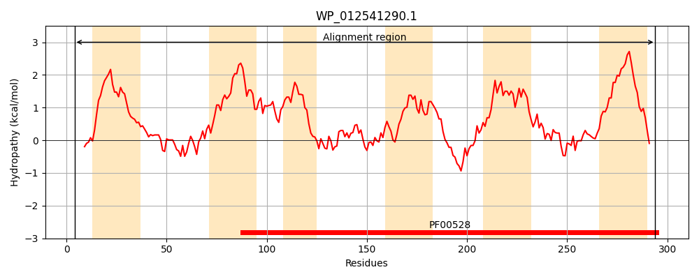
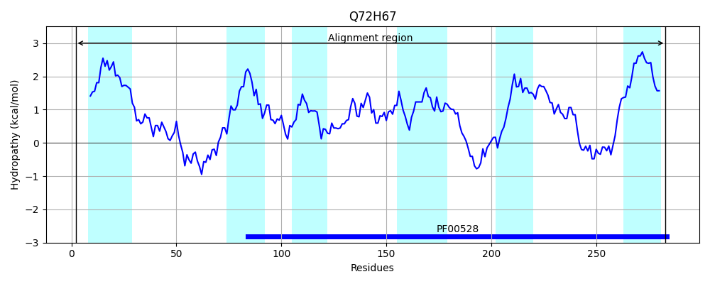
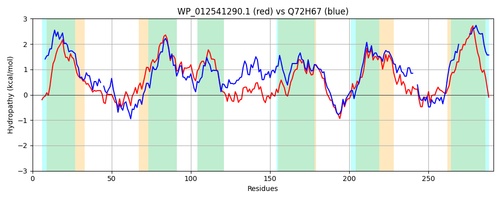

Hit Accession: Q72H67
Hit TCID: 3.A.1.1.25
Hit Description: gnl|BL_ORD_ID|15213 gnl|TC-DB|Q72H67|3.A.1.1.25 Maltose transport system permease protein malF - Thermus thermophilus (strain HB27 / ATCC BAA-163 / DSM 7039).
Mach Len: 291
e:0.000000
Query TMS Count : 6
Hit TMS Count: 6
TMS-Overlap Score: 5.550000
Predicted Substrates:CHEBI:10202;alpha,alpha-trehalose, CHEBI:6668;maltose, CHEBI:9314;sucrose, CHEBI:7893;6-O-alpha-D-glucopyranosyl-D-fructofuranose
BLAST Alignment:
Score: 575 , Bit scores: 226 bits, E-value: 5.6e-73, Alignment length: 291, Percentage identity: 39
Query: 4 LQRREHRQAWVLLAPMLIAMFILTAWPLARTLWLSFTDTALAGSGEATHYVWLDNYLYALTDPDFRAAFARTLYFTVVSVAIEGAIGVLVALLLNQRFVGRNVLRVLVILPWALPTIVNAMMWRLNFNPDYGSVNALLSQLGLIDSYRSWLGSPDSALHAVMLADIWKNYPLVTLLVLAALQSVPDDLYEAARLDGASAWRRFRAITFPAIVGPLGVALVLRTIDAFKVFDIIYVMTRGGPLDSTKTLSFFVYQESFSYLRAGSGAAYAMLMSLMCAVLIALYLFLLLRQR 294
L R+ R AW+L+ P L+ + ++ +PLA+ + SF +A E +V L+NY Y DPDFR A TL FTVVSV++E +G+ +AL+++ F GR ++R +++PWA+PT+V+A MW+ N YG +N L +LGL+ ++L P+ L +++ D+WK P + LL+LA LQ +P++LYEAA +DGAS W++F +IT P + L VAL+ RT+DA +VFD+++VM+ P +T+TL+ + Q + G G+A ++ A+L+ ++ F+LL R
Sbjct: 2 LTLRQVRLAWILVLPTLLVVVLVAGYPLAQVFYWSFFKADIAFV-EPPEFVGLENYAYLFQDPDFRQALWNTLKFTVVSVSLETVLGLAIALIIHSNFRGRGLVRTAILIPWAIPTVVSAKMWQWMLNDVYGVINVLGVKLGLLSQKVAFLARPELLLPSIIAVDVWKTTPFMALLLLAGLQMIPEELYEAASIDGASRWQQFWSITLPLLTPALVVALIFRTLDALRVFDVVFVMSGVNP--ATRTLAVYNRQTLVDFQDLGYGSAISV------AILVIIFAFVLLYMR 283 | Protein Hydropathy Plots: |
|---|
|  |  |
Pairwise Alignment-Hydropathy Plot:
|
|---|
|  |